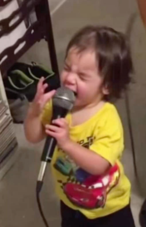
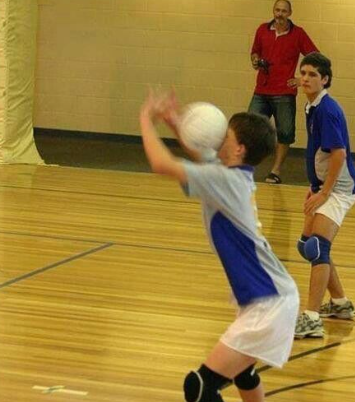

Cocinar

Me gusta ver como me quedan las cosas que hago.

Me gusta hacerlo desde pequeña.
Me gusta ver como me quedan las cosas que hago.

Me encanta ver que me queda bien y que no, probar nuevos estolos, etc.

Salir con amigos (cuando me dejan) es algo que me encanta, me gusta crear lindos recerdos con ellos.

Me gusta mantenerme activa y mejorar en deportes, además es divertido jugar con amigos

Creo que esto lo herede de mi abuela paterna ya qu ella es muy dormilona JAJAJAJAJA